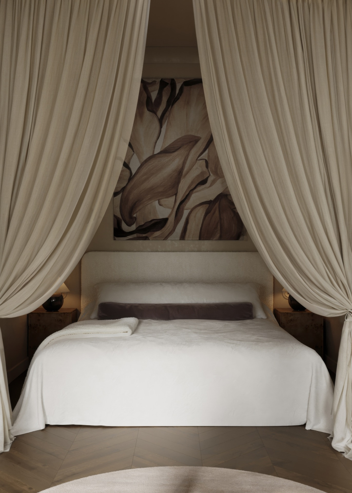
г. Москва, ЖК Bauman Haus, Студия-шкатулка, 30 кв.м.
 Дубай, Апартаменты, 120 кв.м.
Дубай, Апартаменты, 120 кв.м.
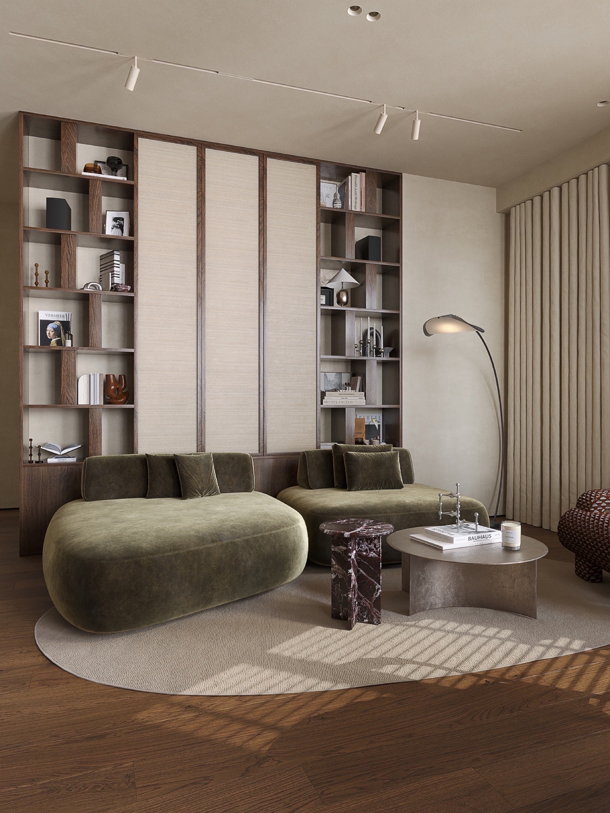
г. Москва, ЖК Архитектор, 60 кв.м.
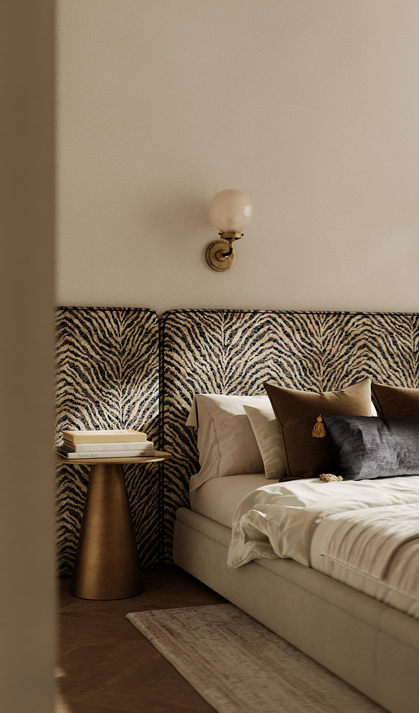
г. Новосибирск, ЖК Облака, 80 кв.м.
 г. Новосибирск, Салон красоты Tati, 90 кв.м.
г. Новосибирск, Салон красоты Tati, 90 кв.м.
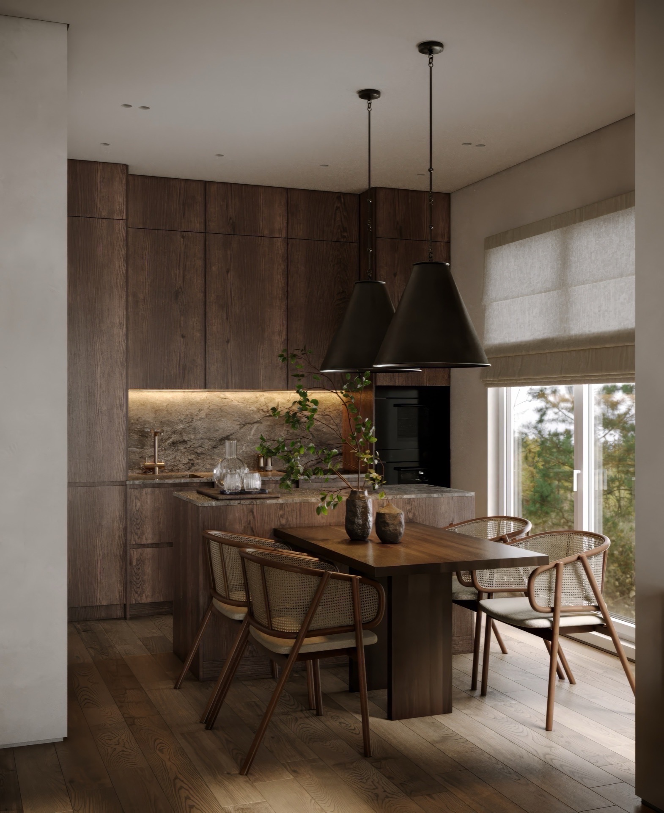
г. Новосибирск, Лаки Парк, Дом, 108 кв.м.
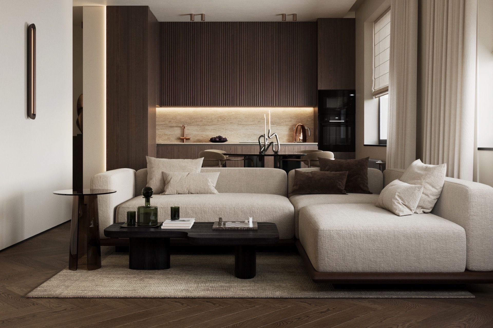
г. Новосибирск, ЖК Пульсар, 62 кв.м.
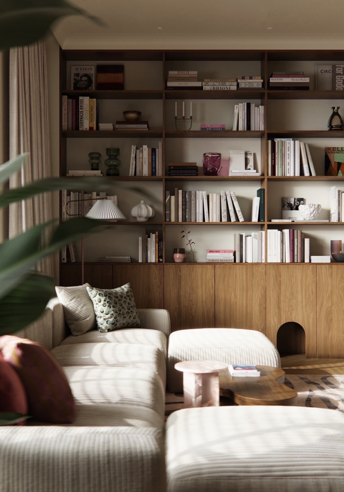
г. Новосибирск, ЖК Квартал Декабристов, 140 кв.м.
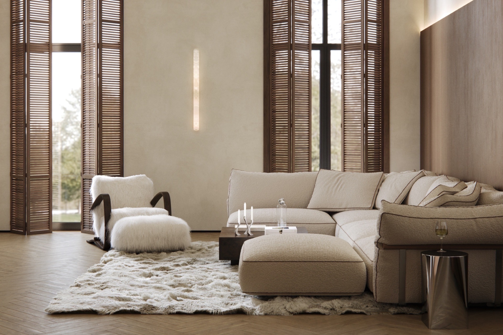
г. Новосибирск, Загородный дом, 160 кв.м.
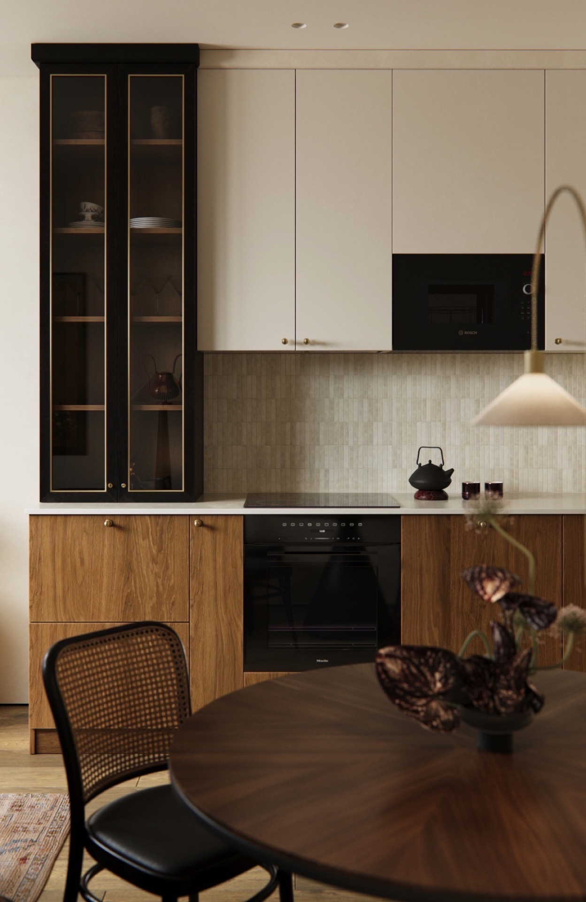
г. Новосибирск, Квартира с восточным вайбом, 48 кв.м.
 г. Новосибирск, ЖК Кедровый, 120 кв.м.
г. Новосибирск, ЖК Кедровый, 120 кв.м.
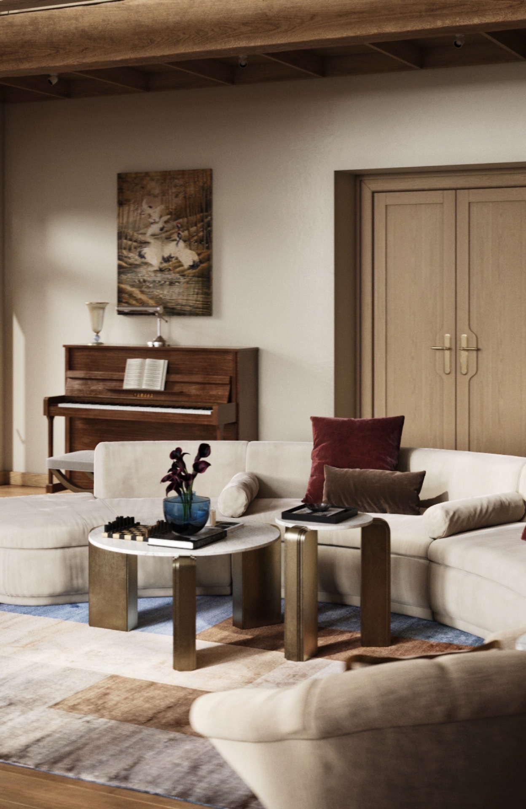
г. Новосибирск, Загородный дом, 300 кв.м.
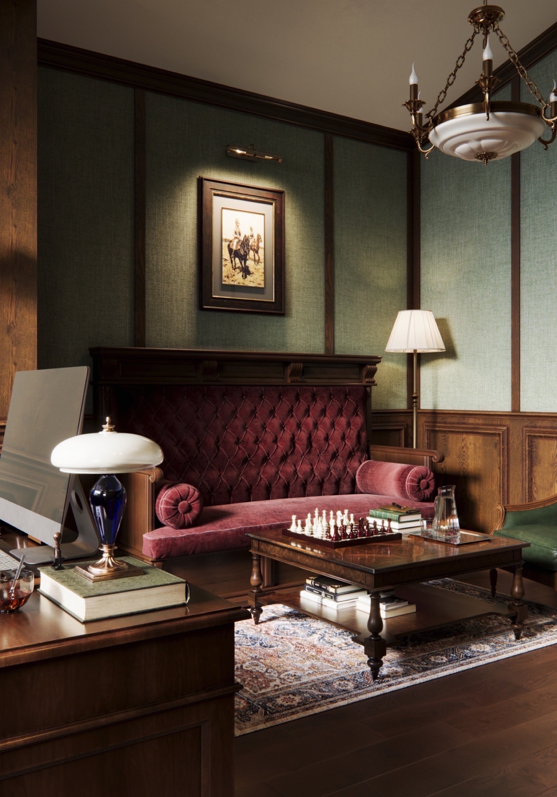
с. Морозово, Загородный дом, кабинет-оружейная, 25 кв.м.
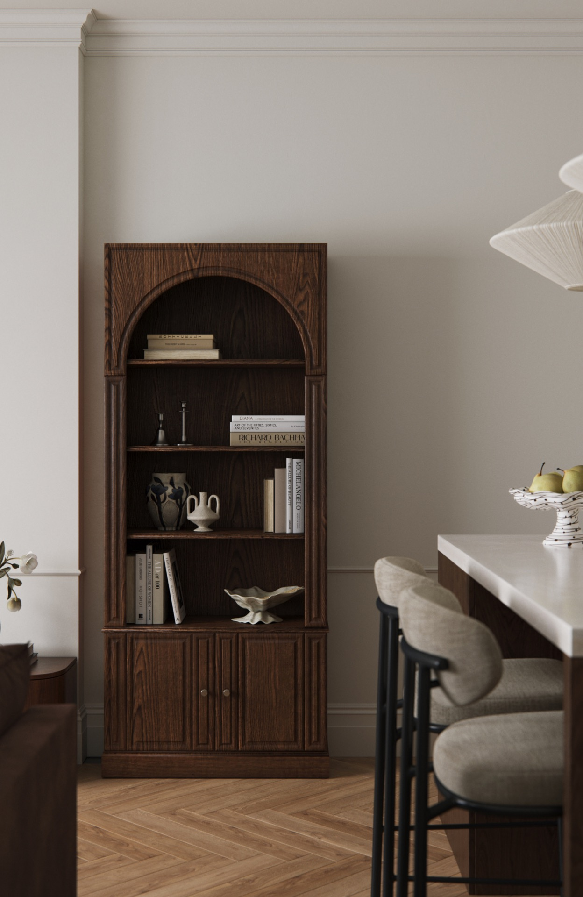
г. Новосибирск, ЖК Европейский берег, 48 кв.м.